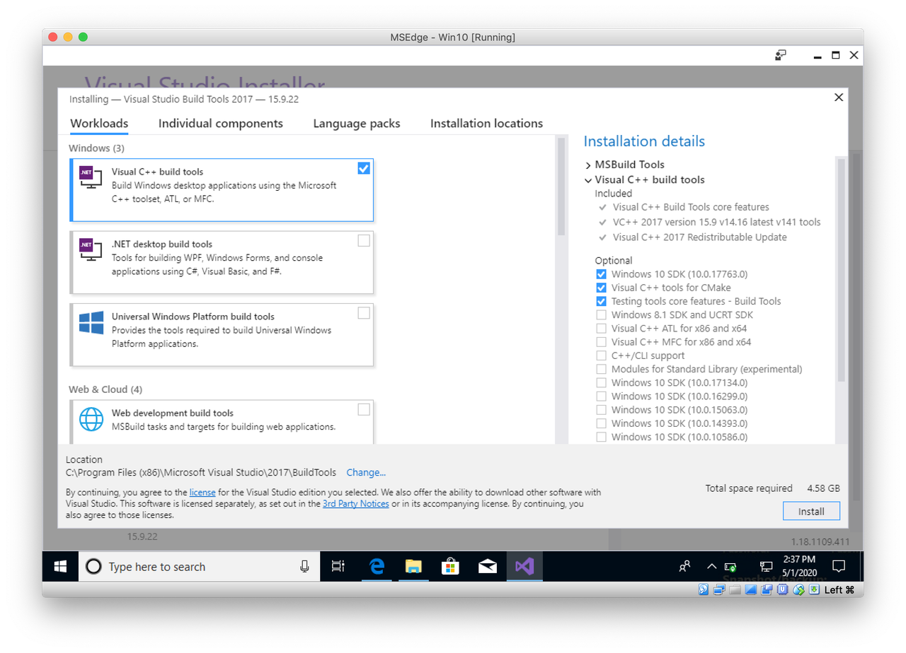
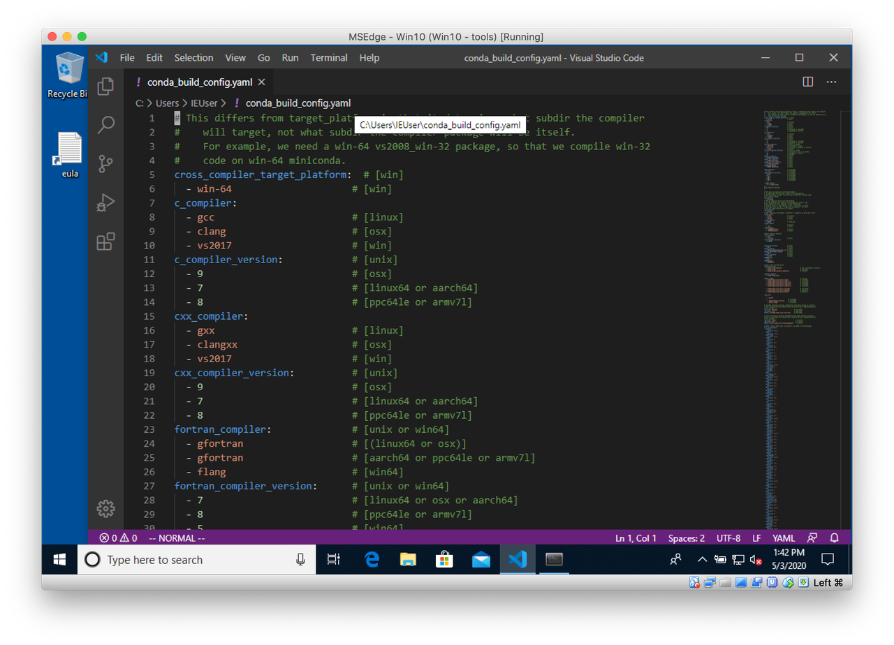

How to setup a Windows VM to build conda packages
I mostly work on macOS and Linux and I have almost no development experience on Windows. I recently wanted to update the epics-base feedstock on conda-forge. The goal was to have it working on the 3 platforms. A good opportunity to try building on Windows.
As explained in conda-forge documentation, it's possible to test Windows builds even if you don't work on Windows.
Create a Windows Virtual Machine
The first step is to download a Virtual Machine from https://developer.microsoft.com/en-us/microsoft-edge/tools/vms/.
I'll use VirtualBox as I work on macOS and already have it installed.
Download MSEdge.Win10.VirtualBox.zip
Unzip the archive
Move the MSEdge - Win10 directory under ~/VirtualBox VMs/
Open MSEdge - Win10.ovf to import it in VirtualBox
Start the new VM
As mentioned on the download page, the password is "Passw0rd!".
Developer tools installation
Now that we have a Windows VM, we need a few developers tools to build conda packages.
VScode
We'll first need an editor. I've been a Vim user for many years, but have to say I started to use VScode more lately, with VSCodeVim of course :-). Microsoft is really doing a nice job. There are many great extensions. I can only recommend it.
Download VScode from https://code.visualstudio.com/.
Obviously, an editor is very personal. Pick the one you prefer!
Git
To work with code, Git is essential. Download and install it from https://git-scm.com/downloads.
Microsoft’s Visual C++
To compile native code (C, C++, etc.) on Windows, we need Microsoft’s Visual C++. As explained in this Python wiki, each Python version uses a specific compiler version.
Since CPython 3.5, Visual C++ 14.X is required. This compiler has been part of Visual Studio since Visual Studio 2015.
As of May 2020, the current version of Visual Studio that you can download from https://visualstudio.microsoft.com/downloads/ is Visual Studio 2019, which comes with Visual C++ 14.2.
We could use that version, but conda-forge currently uses Visual Studio 2017. The transition from vs2015 to vs2017 was done in April 2020. Downloading an older release requires a Microsoft account.
Once logged in, go to https://visualstudio.microsoft.com/vs/older-downloads/ and download the Build Tools for Visual Studio 2017. You don't need to download the full Visual Studio edition.
During installation, only select the build tools.
The installation process will take some time. Be patient.
Miniconda3
Now that we have an editor, Git and Windows C++ compilers, the last tool missing is conda. Download and install Miniconda3 from https://docs.conda.io/en/latest/miniconda.html#windows-installers.
To use conda, start the Anaconda Prompt from the Start menu.
Just a few more steps to configure conda.
-
Add conda-forge channel:
conda config --add channels conda-forge
-
Install conda-build:
conda install -y conda-build
-
Download the conda_build_config.yaml file from conda-forge-pinning-feedstock under the home directory:
curl -LO https://raw.githubusercontent.com/conda-forge/conda-forge-pinning-feedstock/master/recipe/conda_build_config.yaml
The conda_build_config.yaml file contains the version of compilers to use as well as the globally pinned packages. Notice that the compiler is set to vs2017 for Windows.
Note that this file contains several versions for Python: 3.6 and 3.7 at the time of writing. This means that when building conda packages with Python, you'll always build 2 packages (except for noarch). You can keep it as is if you want to test every versions. In most cases, testing one version of Python is enough. Especially during development. You can tune that file to your needs. I'll comment out Python 3.6.
python: # - 3.6.* *_cpython - 3.7.* *_cpython
That's it! We now have all the tools required to build conda packages locally on Windows.
Testing
To check that everything is setup properly, let's try to build an existing conda recipe that requires a compiler. Start an Anaconda Prompt and run:
mkdir conda-forge cd conda-forge git clone https://github.com/conda-forge/cython-feedstock.git cd cython-feedstock conda build recipe
The build should succeed and create the cython-0.29.17-py37h1834ac0_0.tar.bz2 package.
Summary
We now have a VM with all the tools required to build and test locally conda packages on Windows.
In a coming post, I'll detail how I built epics-base on Linux, macOS and Windows.
Comments
Comments powered by Disqus